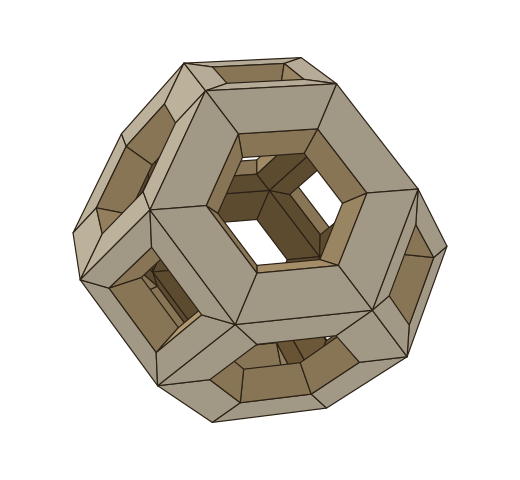
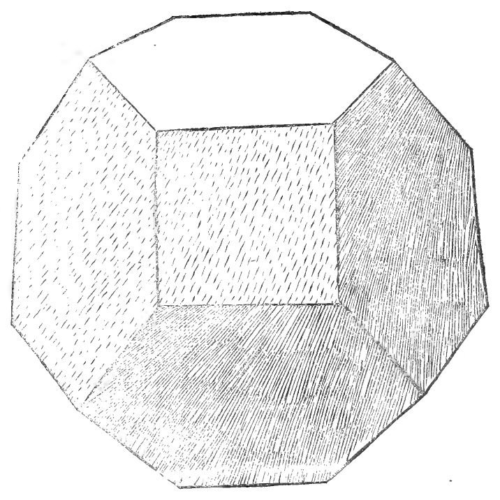
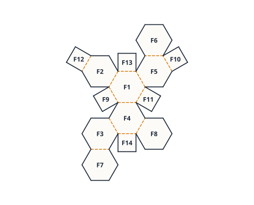

P-02.04 · Truncated Octahedron¶
Octahedron Abscisum · Field: :math:`mathbb{Q}` · Symmetry: :math:`O_h` (order 48) · Convex · Archimedes of Syracuse
Octahedron abscisum fit per abscisionem sex angulorum solidorum regularis octaedri… unde fiunt sex bases quadratae et octo hexagonae.
The truncated octahedron is made by cutting away the six solid angles of the regular octahedron… whence arise six square bases and eight hexagonal bases.
—Luca Pacioli, De Divina Proportione, Cap. XXIII (Venice, 1509)
Interactive 3D Studio¶
Note
Interactive Studio Controls:
Display Modes: Switch between Surfaces (studio-lit polygonal facets), Wireframe (depth-cued structural edges), and Frame (mitered hollow beam manifold).
Opacity & Aperture Sliders: Adjust surface transparency from
0%to100%in Surfaces and Frame modes, and tune the window Aperture in Frame mode.Vertices, Dual & Golden φ: Toggle Vertices (default ON), Dual (the face-center dual whose vertices are the exact centers of the sides), and Golden φ (\(\phi : 1\) golden sections and \(1 : \phi\) golden rectangles).
Machine-Verified Symbolic Certificate¶
Mathematical Invariant |
Exact Symbolic Value |
Geometric Interpretation |
|---|---|---|
Catalog Identifier |
|
Family 02 (Archimedean Solids), Solid 04 |
Algebraic Number Field |
\(\mathbb{Q}\) |
Pure rational field |
Topology |
\((V=24, E=36, F=14)\) |
Euler characteristic \(\chi = 24 - 36 + 14 = 2\) |
Face Composition |
6 squares + 8 regular hexagons |
Vertex figure \(4 \cdot 6^2\) |
Exact Edge Quadrance \(Q_E\) |
\(2/9\) |
Edge length \(s = \frac{\sqrt{2}}{3}\) |
Exact Circumquadrance \(Q_{\text{out}}\) |
\(5/9\) |
Circumradius \(R = \frac{\sqrt{5}}{3}\) |
Primary Dihedral Spread \(s\) |
\(8/9\) |
Hexagon-to-square spread: \(s = 8/9\), identical to regular octahedron |
Vacuum Manifold |
\((V=192, E=432, F=216)\) |
Genus \(g = F - 1 = 13\), \(\chi = -24\) |
Polar Dual |
Tetrakis Hexahedron |
Catalan solid with 24 isosceles triangular faces |
Symmetry Group |
\(O_h\) (order 48) |
Full octahedral chiral and reflection group |
Historical Canon |
Archimedes of Syracuse; Heron Definitiones |
Pacioli De Divina Proportione Cap. XXIII; Tabulae XVII–XVIII |
Exact Coordinate Representative Ledger & Algebraic Construction¶
Canonical Permutohedron Coordinates¶
In the GEOMETOR formulation, the 24 vertices of the truncated octahedron are generated by all coordinate permutations of \((0, \pm 1/3, \pm 2/3)\):
Coordinate Family |
Exact Symbolic Generator |
Number of Vertices |
|---|---|---|
$x = 0$ plane |
$(0, \pm 1/3, \pm 2/3), \; (0, \pm 2/3, \pm 1/3)$ |
8 vertices |
$y = 0$ plane |
$(\pm 1/3, 0, \pm 2/3), \; (\pm 2/3, 0, \pm 1/3)$ |
8 vertices |
$z = 0$ plane |
$(\pm 1/3, \pm 2/3, 0), \; (\pm 2/3, \pm 1/3, 0)$ |
8 vertices |
Every vertex has exact rational circumquadrance:
All 36 edges have uniform quadrance \(Q_E = 2/9\). Because the truncated octahedron tiles 3-space without voids (the bitruncated cubic honeycomb), in 1887 Lord Kelvin proposed this solid as the optimal geometry for partition of space into equal-volume cells of minimum surface area.
Leonardo da Vinci’s 1509 Woodcuts & Corpus Vacuum Reconstruction¶
In Luca Pacioli’s De Divina Proportione (1509), Leonardo da Vinci rendered the truncated octahedron in Tabulae XVII and XVIII as Octahedron Abscisum Solidum and Octahedron Abscisum Vacuum.


Exact Symbolic Reconstruction: Open wooden framework (\(\mu = 0.25\)) of genus \(g = 13\) and Euler characteristic \(\chi = -24\).¶
Leonardo da Vinci (1509 Woodcut) |
Classical Designation & Codex Study |
|---|---|
 Tabula XVII (Folio 0223): Octahedron Abscisum Solidum¶ |
Detailed codex analysis in Tabulae XVII–XVIII: Octahedron Abscisum. Solid space-filling cell with hexagonal and square facets. |

Tabula XVIII (Folio 0225): Octahedron Abscisum Vacuum¶ |
Detailed codex analysis in Tabulae XVII–XVIII: Octahedron Abscisum. Hollow wooden frame showing interior hexagonal conduits and diagonal joinery. |

Unfolded 2D Papercraft Net¶
The truncated octahedron unfolds into the Euclidean plane along 23 cut edges into a symmetrical net of eight hexagons and six squares:


2D Dihedral-Hinge Unfolding: Fourteen polygons joined along 13 internal hinges (dashed lines) and 46 boundary cut edges (solid lines).¶